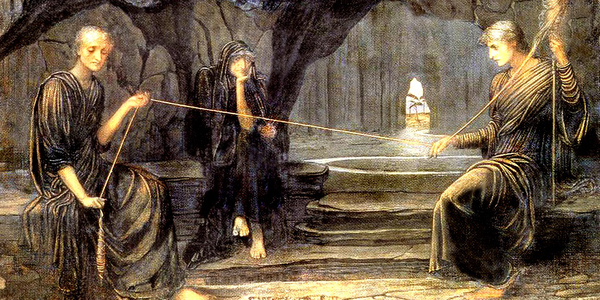

Otras deidades y elementos importantes en la mitología nórdica
Residentes en el propio yggdrassil:
Níðhöggr
En la mitología nórdica, Nidhogg o Nidhug (nórdico antiguo: Níðhöggr; que se puede traducir
como «el que golpea lleno de odio») es un dragón que roía la raíz del árbol del mundo,
Yggdrasill. En la sociedad vikinga histórica, níð
era el término usado para el estigma social
por la pérdida del honor y la condición de villano. Por lo tanto, pudo referirse a su papel
como monstruo horrible o su acción al masticar los cadáveres de los habitantes de Náströnd:
aquellos culpables de asesinato, adulterio, y romper juramentos, que en la sociedad nórdica
se consideraba uno de los peores crímenes.
Nornas
Las nornas (nórdico antiguo: norn, plural: nornir) son dísir
(plural de "dís", un espíritu femenino) de la mitología nórdica, conocidas como
Hilanderas del
destino descendientes del gigante Narfu y quienes se encargaban de controlar el
destino de los dioses y las personas.
Las nornas vivían bajo un árbol llamado Yggdrasill , el
árbol del cosmos situado en el centro
del
mundo. Desde aquí, al igual que las parcas en la mitología romana, tejían los tapices del
destino, iban hilando y el hilo de su telar eran las vidas de cada uno.
Urd es representada por una vieja que siempre mira hacia atrás, es el
pasado.
Verdandi representa el presente con una joven mirando adelante.
Skuld, que representa el futuro, normalmente se la ve leyendo un libro
en blanco que
sería el destino para escribir
Las tres se encargaban de regar el árbol con las aguas de las fuentes de Urd.
A ningún dios, nisiquiera al mismo Odín, se le permitía observar
los tapices que tejían. El hecho de
que los dioses también estuvieran bajo el control de las Nornas es un tema
bastante recurrente en la literatura sobre mitología nórdica.
Según las Eddas es probable que además de las tres nornas hubiera más asociadas a personas
concretas.

Nornas hilando los tapices del destino.
Ratatösk
Ratatosk, Ratatösk o Ratatöskr es una ardilla que corre de arriba abajo por el árbol del
mundo Yggdrasill llevando mensajes entre
Vedrfölnir, el águila sin nombre, posada en la copa,
y el dragón Níðhöggr , que reside bajo una de las tres ramas del
árbol.
Existen varias vertientes sobre este ser, para algunos la ardilla probablemente sólo
representa un detalle decorativo
de la imagen mitológica del fresno del mundo. Para otros la ardilla
también roía el árbol, lo que continúa el ciclo de destrucción y reconstrucción, y propone
al
árbol como simbolización del constante cambio existencial.
Ratatösk en un manuscrito islandés del siglo XVII.
Vídeos sobre otros seres pertenecientes a la mitología